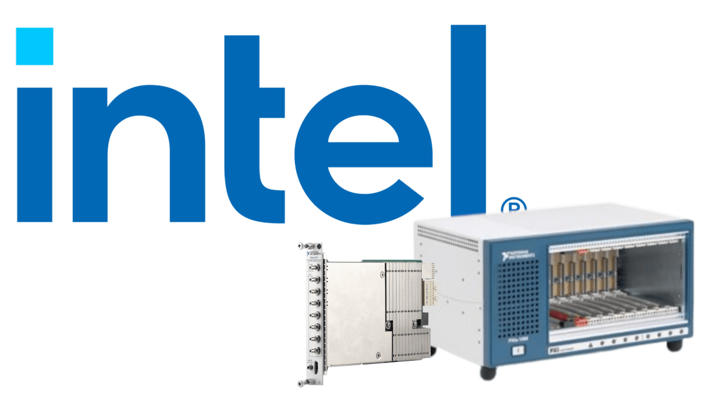
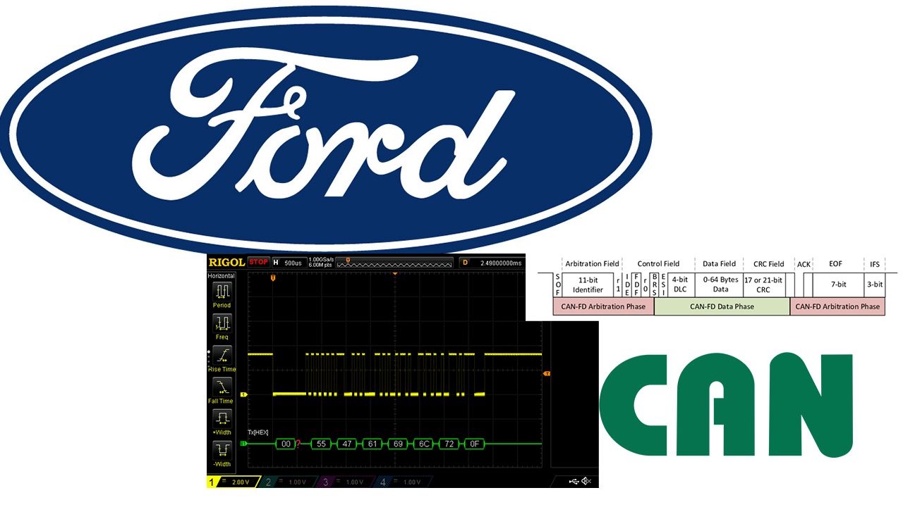
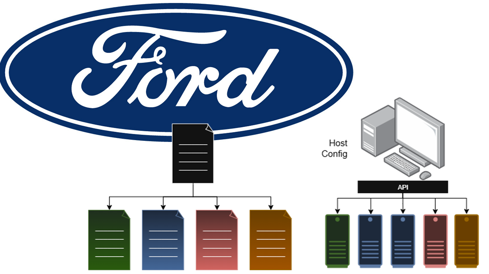
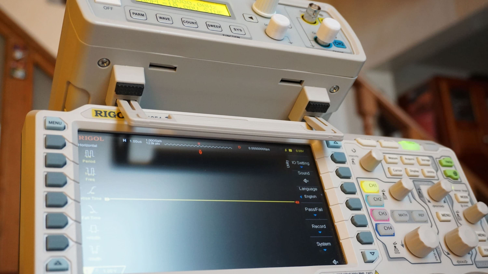
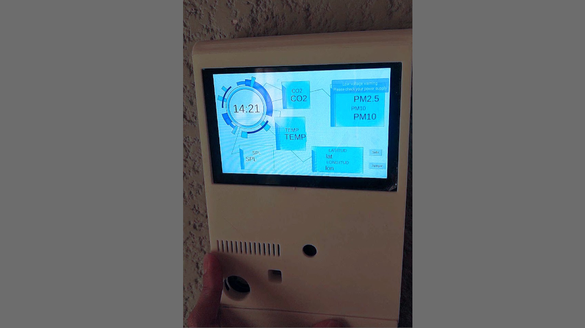
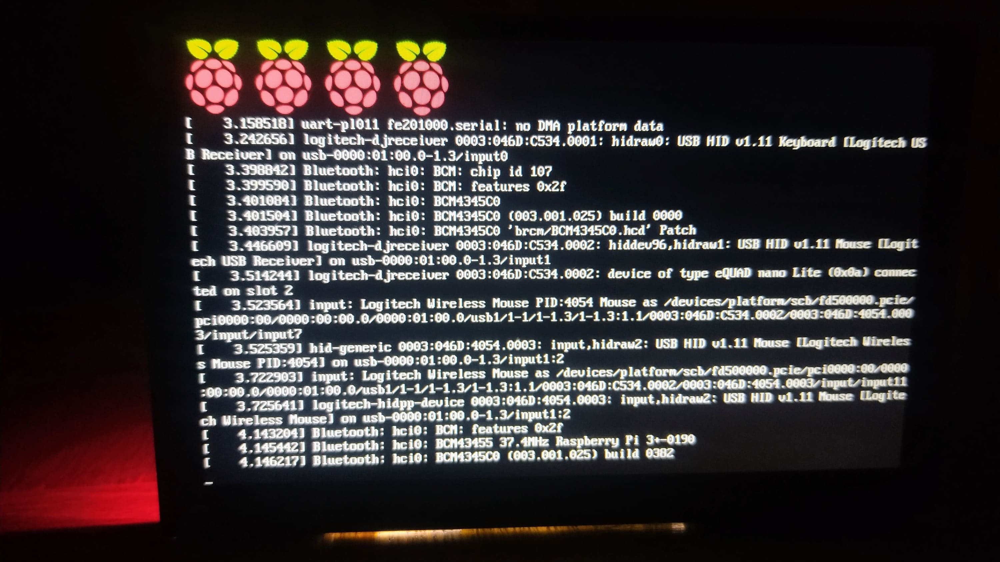
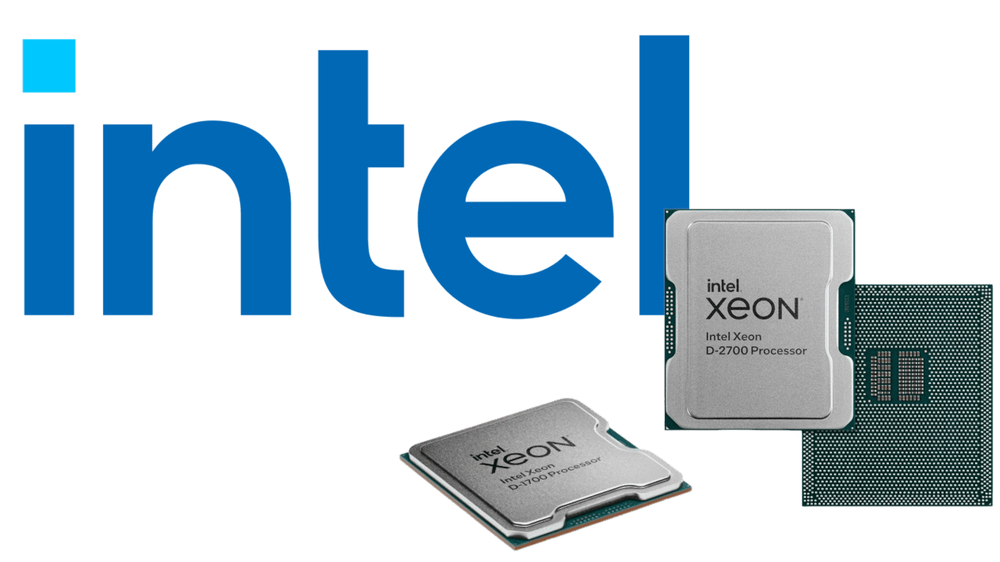

As a System Validation Associate at Intel Corporation, I developed a custom signal acquisition suite to support server system validation.
Using National Instruments hardware and software, this solution enabled data capture for different test cases, offering scalability in the number of input channels
and delivering higher resolution data than oscilloscopes (in most cases).
Developing it with Python allowed integration with an existing automation framework, reducing time and minimizing issues related to manual intervetion.

During my time at Capgemini Engineering, collaborating as consultant for Ford, I developed custom drivers for automotive
communication protocols integrated with Embedded Linux, aiming to enable low-cost and scalable testing environments for
CAN Classic, CAN FD and LIN buses.
The development included the analysis for integration with existing tools and frameworks, delivering a software layer
closer to hardware.

During my time at Capgemini Engineering, collaborating as consultant for Ford, I designed the architecture for a scalable
and modular automotive testing platform. The solution sought to standardize a kind of manual testing, adopting mechanisms from
other platforms like System Description Files and tailoring very specific modules for different test cases.
Most of work lied in the software architecture, bridging testing frameworks with the hardware, so modeling the layers for enabling
scalability and maintanibility was a very important and detailed part. Applying OOP concepts aligned the solution with modern software
design.

Developed a tool for Bode plot visualization using a Rigol DS1054Z Oscilloscope and FY3224S signal generator, enabling automated frequency
response analysys of analog circuits. The system injects sine waves across a frequency sweep and measures input/output signals to derive
amplitude and phase characteristics.
The Python scripts automates frequency stepping, data acquisition, log and plot generation (using pyvisa, pandas and matplotlib).
For improving user experience, I developed a simple GUI for selecting instruments, set the analysis parameters and show/save results
(used Tkinter).
This is an Open Source project hosted on GitHub:
BodePlot-DS1054Z
This was conceived as a highg school project to explore interesting control methods for robotic systems., this initiative led to the development
of an EEG-controlled 3d-printed robotic hand (InMoov) using a Neurosky Mindwave bluetooth headset. The system interprets concentration levels and
maps them to gesture commands with servo motors.
This was published on GitHub and YouTube, which supported other student projects using the same setup (headset and inmoov hand).
Later developed a custom Arduino API to simplify EEG data acquisition/integration, and released as open-source on GitHub:
mindwave-arduino-tools
I found a reference to this repo in a Medium article related to the headset:
My experience with Mindwave Mobile 2

Designed as a capstone engineering thesis, this project aimed to develop a low-cost, modular IoT solution for real-time air quality monitoring in
urban environments. The system integrates multiple sensors to measure pollutant levels such as PM2.5, PM10, CO and Sound pressure level. The system
is able to capture the current location for mounting it in mobile stations.
The data logs are stored locally to publish them when Internet connection is available. This data is sent to a Thingspeak server enabling data
visualization in panels.
This was a full cycle development, from planning to design the software architecture; selecting the sensors, SBC and LCD display; designing and building
some PCBs; designing and 3d printing a case considering factors as temperature and exposure to environment and finally structure the data for local and
remote visualization.

Developed a custom Yocto layer designed to generate Linux images for Raspberry Pi boards, preconfigured for running Python-based GUIs and interacting
with the GPIO.
The layer streamlines deployment for embedded projects requiring both visual feedback and hardware control.
It is in a public repository:
meta-rpi-gui

I contributed to the full validation cycle of Xeon D server-grade processors, focusing on stress testing under real-world workloads and hardware
conditions.
My role involved programming FPGAs to generate synthetic traffic for PCIe interfaces (3.0, 4.0, and 5.0), selecting specific DIMM modules for
aggressive memory channel testing, and creating randomized traffic patterns to stress the processor's onboard NIC.
Additionally, I executed OS-level workloads that targeted CPU, PCH, and PCIe lanes to simulate performance under intensive system scenarios.
These efforts helped uncover bottlenecks and ensured system reliability during high-throughput operations.
 .
I have a minor in Communications and Electronics, and I've been into Software Development
since I was about 10y.
.
I have a minor in Communications and Electronics, and I've been into Software Development
since I was about 10y.